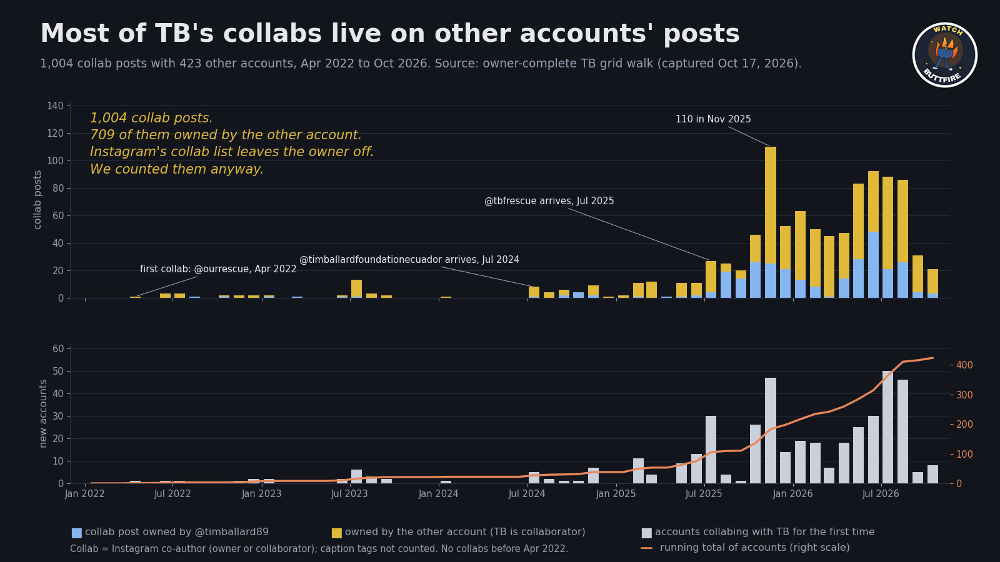
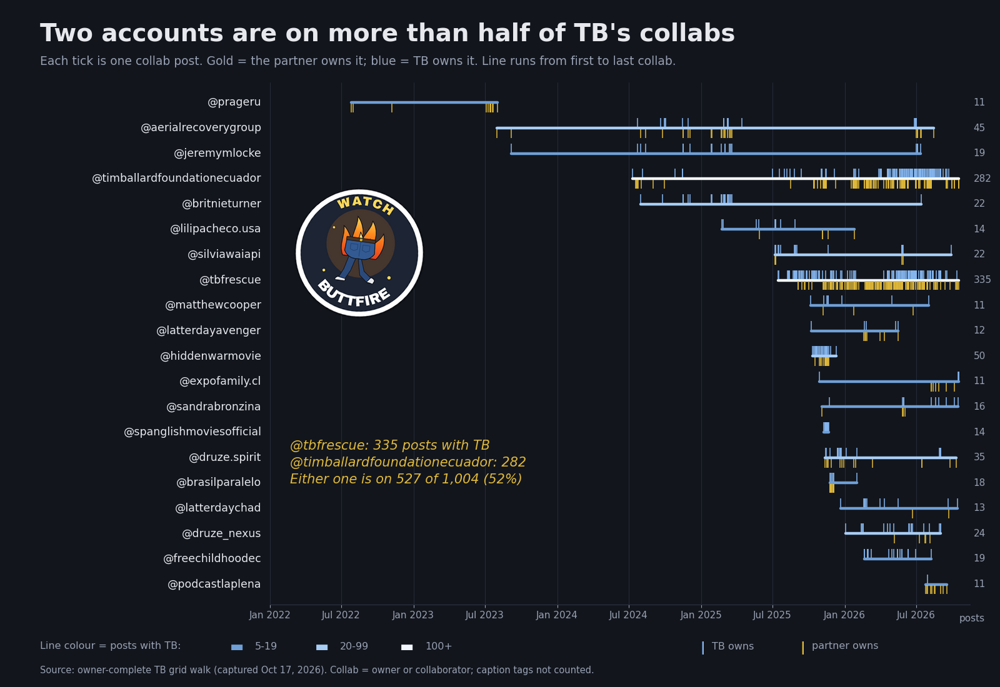
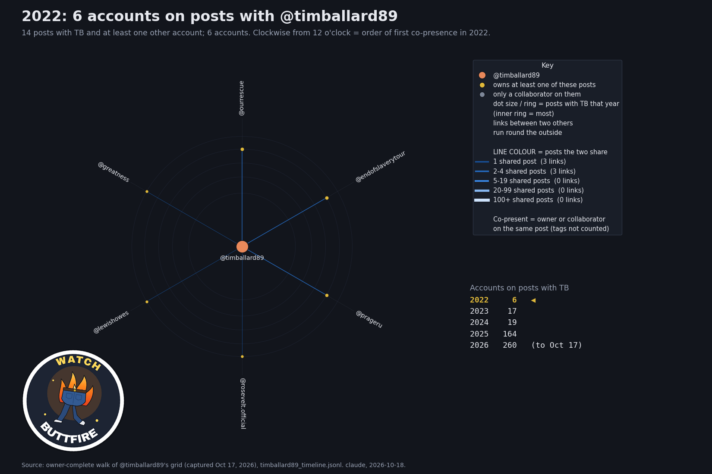
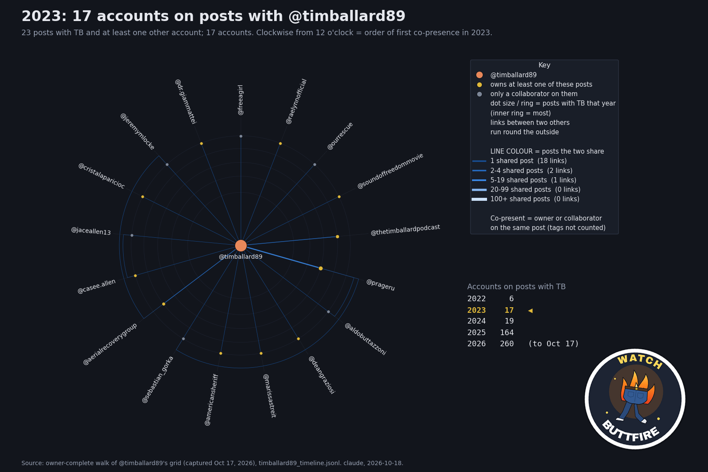
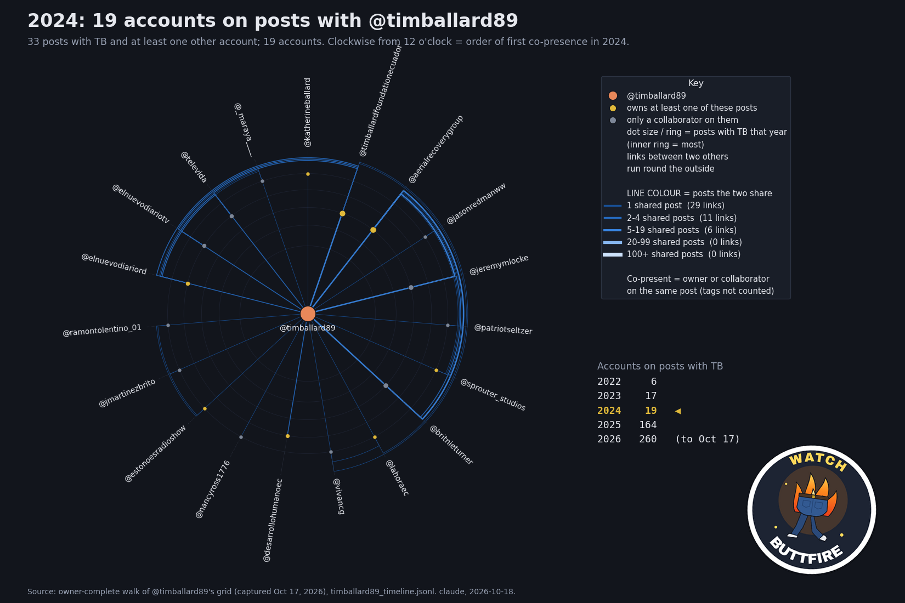
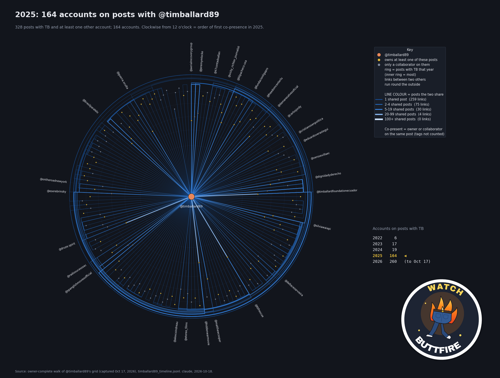
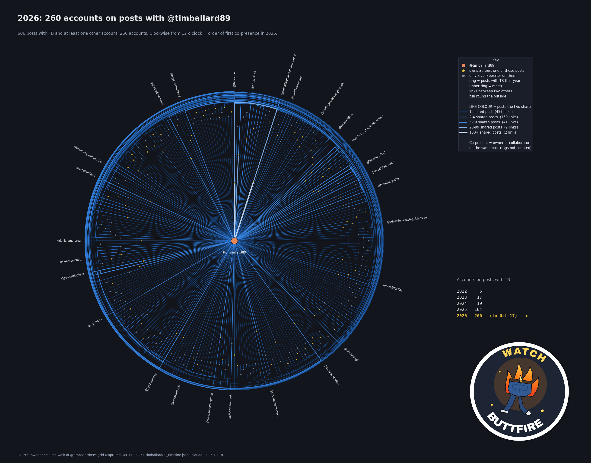

Every @timballard89 Instagram collab, in time order, read with each post's owner: 1,004 collab posts with 423 other accounts, April 2022 to October 2026. 709 of those posts belong to the other account.
One piano note per collab post. The more accounts on a post, the higher the note; posts on the same day ring together as a chord. A dot lights up when its account is on the post. April 2022 to October 2026 in 100 seconds: a few lonely notes for two years, then 30 a second.
Month by month

Blue = TB owns the post; gold = the other account owns it, with TB as collaborator. Bottom: accounts collabing with TB for the first time.
Year
Collab posts
TB owns
Other account owns
New accounts
2022
14
2
12
6
2023
23
4
19
15
2024
33
9
24
17
2025
328
114
214
159
2026
606
166
440
226
The biggest partners

Each tick is one collab post: blue above the line = TB owns it, gold below = the partner owns it. @tbfrescue and @timballardfoundationecuador are on 527 of the 1,004.
Year by year
Everyone co-present with TB on a post, one year at a time: 6 accounts in 2022, 17 in 2023, 19 in 2024, 164 in 2025, 260 in 2026 so far.

2022. Clockwise from 12 = order of first co-presence that year; inner ring = most posts with TB; links between two other accounts run round the outside. Plain version in the data folder.

2023. Clockwise from 12 = order of first co-presence that year; inner ring = most posts with TB; links between two other accounts run round the outside. Plain version in the data folder.

2024. Clockwise from 12 = order of first co-presence that year; inner ring = most posts with TB; links between two other accounts run round the outside. Plain version in the data folder.

2025. Clockwise from 12 = order of first co-presence that year; inner ring = most posts with TB; links between two other accounts run round the outside. Plain version in the data folder.

2026. Clockwise from 12 = order of first co-presence that year; inner ring = most posts with TB; links between two other accounts run round the outside. Plain version in the data folder.
Why the owner matters
Instagram leaves a post's owner off that post's own collaborator list. A post another account owns, with TB as its only listed collaborator, sits on TB's grid looking like a solo TB post. Our earlier table read it that way and dropped it: 618 posts, 295 accounts. Reading the owner of every post on TB's grid puts them back: 1,004 posts, 423 accounts. Most of TB's collabs are on other accounts' posts.
Check it yourself
replicate.pyrebuilds both tables from the raw grid file and prints REPLICATED (plain Python 3)
tb_collab_posts.csvall 1,004 collab posts: date, link, owner, the other accounts